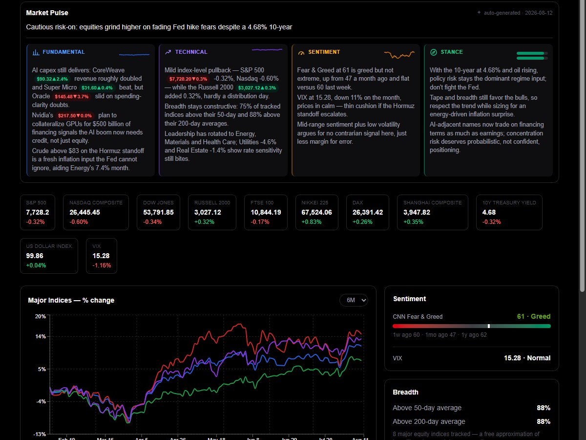
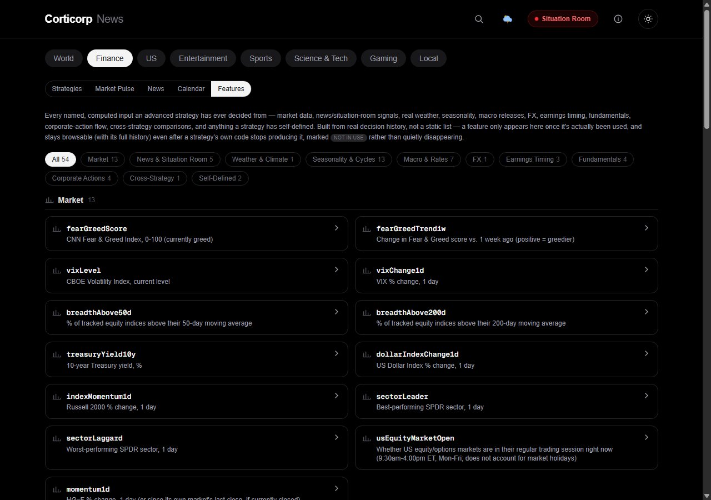

Live web app
A public, simulated strategy tracker. Thirty-nine model-managed portfolios run side by side on the same market, each with its own stated investment discipline, each starting from the same $100,000, and each publishing every decision it makes along with the reasoning and the exact inputs behind it. Around them sit a twice-daily Market Pulse, the persisted market and macro data the strategies are actually shown, an earnings and macro calendar, and an AI Board that reviews the roster in public.
Finance began as a section of Corticorp News. In late August 2026 it moved out and became its own product on its own domain, with its own masthead and its own sections. The newsroom stayed where it was.

The roster
The twenty-six sleeve strategies are model portfolios: a documented target allocation across cash, treasuries, equities and commodities, each sleeve priced through a real named ticker, with only the weights differing. The thirteen advanced strategists are given a feature sheet and a mandate and decide for themselves. Two of those thirteen are control arms that exist to demonstrate a known error, so the roster has something honest to be measured against. Every strategy publishes its reasoning, and the interesting part is watching genuinely different disciplines diverge on the same market, including the long stretches where a perfectly sound discipline trails plain buy and hold.
Simulated portfolios. A research experiment, not investment advice.
What is on the site
The day in one screen: the Market Pulse read, where the indices closed, what led and lagged by sector, and the finance stories from the newsroom next door.
Performance against the index, every strategy's own page, the daily written comparison, and the Oversight tab where the Board's findings and the open work items are published.
The Market Pulse in six editions: overview, sector, macro, commodities, physical and news, each written twice a weekday with the numbers it was given shown alongside it.
The persisted market and macro series the strategies are shown, and the features derived from them. Every series says when it was last written and where the value came from.
Estimated bellwether earnings taken from each company's own filing history rather than an announced date, official macro releases, rate decisions, and corporate actions on watched names, with a note on which strategies are watching each one.
What a model portfolio is, what tactical asset allocation means, how the benchmark is cut, and what the tracker can and cannot tell you. Written to be read by someone who has not done this before.
Oversight
Seven AI roles run inside the site and see the database: a Judge who rules on the standings, a Scientist who tests whether a result is real or noise, a Treasurer who separates exposure from skill, an Auditor who checks the record's integrity, an Editor, a Librarian research desk, and a Marketer. Four more roles read the source code and never run inside the site: a System Architect, an AI Architect, a Security Expert, and a Software Engineer.
The specialists propose and file work items; one decision point approves; nothing on the Board merges its own work. Their findings and the open queue are published on the Oversight tab rather than kept internal, which is the whole point: a tracker that grades itself in private is not evidence of anything.
A look inside
A dense sortable table with a period selector and a plain vs-S&P-500 verdict on every row, over a chart of the whole roster since inception. Click a line to pin it.
A blended index per category, charted over time, so "how is this whole discipline doing" is answerable before drilling into any one strategy.

The named signals a strategy has actually decided from, built from real decision history rather than a static list. A retired signal stays browsable, tagged rather than deleted.
Improvements diary
Finance keeps a written register of every change to the models it runs on, because the returns, the lessons and the commentary are all produced by models: changing one is a change to the measuring instrument, not just to the bill. The diary below is the reader-facing version of that register, plus the shipped work around it. Newest first.
August 31, 2026
Four of the six daily editions had been failing silently whenever the model's answer ran past its output ceiling, which does not shorten an answer, it destroys it. The ceiling was raised and a cut-off answer is now retried, so a long edition publishes instead of vanishing. An edition that is behind schedule now says so on its own chip rather than looking current.
August 30, 2026
A strategy is now told where its current exposure sits against its own last twenty sessions, as a bare percentile with no adjective attached. The Board gained a per-strategy risk fingerprint and a roster-wide risk index, and the Scientist gained a measurement of whether a strategy's risk timing actually pays.
All of it is gated on having enough history to mean anything, so most of it renders nothing yet. That is deliberate. A percentile computed from four sessions would read exactly like one computed from four hundred.
August 29, 2026
The risk block gained what a week of no price movement costs an options sleeve, what a ten-point move in volatility is worth to it, and what a fall in one single holding does to a concentrated book. The last one matters most: for a book with three positions, a single name moving is the event that actually happens.
August 28, 2026
Net and gross exposure, the largest single position, and what a 1, 3, 5 or 10 percent market fall costs, each figure computed by revaluing every position at the shocked price rather than estimating from a multiplier. An inverse holding is netted the right way round instead of being counted as long exposure.
The Board reads the same figures across the whole roster, and the Judge now weighs each return against the exposure taken to earn it, which was a comparison its instructions asked for long before it had the numbers to make it.
August 27, 2026
Finance got its own front page and its section routes. Separately: a bad out-of-hours tick is no longer served as a price, after a single stray bar printed nearly 7 percent away from its neighbours and every reader treated it as the current quote for five minutes. And the S&P no longer reads flat overnight, because a cash index simply stops existing when the session shuts; the E-mini future was added to say what is actually happening.
The Wizard came off round-the-clock polling onto four weekday sessions, and was given the whole roster's returns instead of the two peers it had been handed since the roster was three strategies. The deal-flow strategy was finally shown actual deal terms, having been the one strategy on the roster whose entire thesis is deal flow and the only one that could not see a spread.
August 26, 2026
Each domain now answers only for its own product. The Market Pulse can also ask the research desk now, so a named company carries its real number rather than a rounded one, and an earnings result is carried back to the strategist that armed a trigger for it.
August 25, 2026
Its own brand and header, its own sitemap and robots file, each product's paths routed to its own domain, and page visits counted per host so the two sites are separately measurable rather than one blended number.
Market Pulse quality landed the same week: one consistent line per market instead of six different shapes, repetition measured across the stored editions and backfilled so the measurement has a history, and the model given the day's actual deltas rather than being told to reuse a headline.
August 24, 2026
Sign-in by magic link with real sessions, and no more admin key sitting in a URL. Reports arrived as eleven parameterised, read-only queries behind a registry, with saved definitions re-validated every time they run rather than trusted once. The dashboard got its own route and a panel registry, plus chart arithmetic over any two persisted series.
Prices were hardened at the same time: only settled closes are stored, each stamped with when it was written and where it came from, and reconciled against a second provider. The archive is backed up nightly and the restore is proven rather than assumed.
August 23, 2026
Every strategist's research became a standing block in a fixed position, which is cheaper to serve and much easier to audit, since a block that moves cannot be compared across days. One strategy came off the intraday clock in the same pass.
August 21, 2026
Topic repair, claim detection and quote extraction moved onto a cheaper batched model. This is a cost change rather than a judgement change, and it is registered as one, so nobody later reads a shift in the numbers as the market having done something.
August 20, 2026
The clustering model for the flagship categories, the Broad Market Pulse, the Judge, how stored closes are written, and how volatility is annualised. Any track record spanning this date is two records rather than one, which is precisely the thing the register exists to make visible.
August 16 and 17, 2026
Its model on one day and its effort level on the next. Recorded separately, because a comparison across both dates is a comparison of three configurations and not two.
August 12, 2026
The first Market Pulse and the first twelve simulated strategies went live, inside the Finance section of Corticorp News. Everything above happened in the twenty days after.
Built with
One codebase serves both finance.corticorp.com and news.corticorp.com, routed by hostname, with each domain publishing only its own pages and its own sitemap.